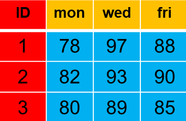
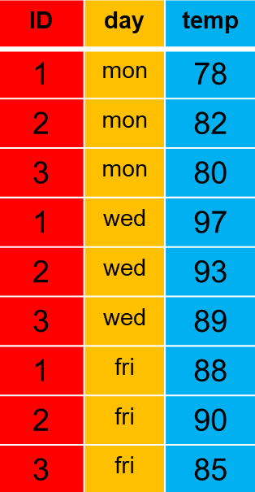

library(dplyr)
library(tidyr)
library(tidyselect)Transforming Data Frames: Pivoting
Overview
In this module, we will address converting data frames from wide to long and from long to wide, especially in service of arranging data frames to be tidy. The functions for making tidy data frames used here are from {tidyr}, specifically pivot_longer() and pivot_wider().
Readings and Preparation
Before Class: First, read to familiarize yourself with the concepts rather than master them. I will assume that you attend class with some level of basic understanding of concepts and working of functions. The goal of reading should be to understand and implement code functions as well as support your understanding and help your troubleshooting of problems. This cannot happen if you just read the content without interacting with it, however reading is absolutely essential to being successful during class time. Work through some examples so that you have a good idea of your level of understanding and confidence.
Class: In class, some functions and concepts will be introduced and we will practice implementing code through exercises.
Supplementary Readings (Optional)
Libraries
- {here}: 1.0.1: for path management
- {dplyr} 1.1.4: for selecting, filtering, and mutating
- {tidyr} 1.3.0: for transforming/pivoting data frames
- {tidyselect} 1.2.0: for advanced variable selections functions
- {tidyverse} 2.0.0: for the entire tidyverse ecosystem
Loading Libraries
We will work with a few different libraries for data manipulation. Let’s load them into our work space using library().
Data Structure Formats
Data stored in tables are 2-dimensional. Some tables can be long and narrow and some can be short and wide even though they may represent the same data.
but take various forms. Sometimes those forms are based on software packages what work with data in a particular way. For example, SPSS prefers data with many column variables whereas R likes files that are long but contain fewer column variables. On other instances, data take on forms because they are easier to save, easier to share with others, or easier to
Tables are a two-dimensional, very used form of storing and preparing data, and this can be done in two ways: wide and long format.
Each format type has both advantages and disadvantages. The purpose of this module is to introduce ways to transform data from one format to another depending on your goal. In most instances, we will focus on long formats that are tidy because R prefers them for plotting and modeling.
Wide Format Data
Wide-format data files are likely most familiar to you as they represent the type of data you may see in spreadsheets. In this example,e individuals have values for three different days with days as columns and individuals as rows.

Some disadvantages associated with this representation is that unless there is documentation, you would be unsure what the numeric values represent and the three days represent levels of a day variable which is not part of the data file.
Long Format Data
The same data can be presented in long-format, for which days are aligned in a column along with a variable name, temp.

Some disadvantages of long-format files is that they are long and difficult to search through and they are limited in their ability to represent a merged version of multiple data sets all of which contain different numbers of rows. By contrast, wide-format files can accommodate multiple columns because each column could easily represent an observation and rows could represent unique cases.
Tidy Data
Characteristics of tidy data:
- Each variable is its own column
- Each observation is its own row.
- Each value has its own cell
The goal of restructing data will be to create tidy data for with each variable is represented as a column and observations across rows.
Creating Sample Data
Let’s use tibble::tribble() to create an example data frame containing 7 columns and 4 rows. The column variables and data for “tasks” will be redundant in order to demonstrate examples.
(EXAMPLE <-
tibble::tribble(
~name, ~`2023`, ~`2024`, ~task_A, ~task_B, ~tsk1, ~tsk2,
"Bill", 175, 170, 10, 12, 10, 12,
"Sally", 120, 135, 10, 15, 10, 15,
"Jim", 150, 150, 11, 24, 11, 24,
"Sue", 115, 120, NA, NA, NA, NA,
))# A tibble: 4 × 7
name `2023` `2024` task_A task_B tsk1 tsk2
<chr> <dbl> <dbl> <dbl> <dbl> <dbl> <dbl>
1 Bill 175 170 10 12 10 12
2 Sally 120 135 10 15 10 15
3 Jim 150 150 11 24 11 24
4 Sue 115 120 NA NA NA NANote: Adding parentheses around the assignment as shown above also causes R to print the object in addition to assigning it.
Inspecting/Taking Inventory of the Data Structure
We first need to inspect the data frame structure. Although you can see this from the output above, another way to view the structure of data frames is by using dplyr::glimpse() or base R str().
EXAMPLE |>
glimpse()Rows: 4
Columns: 7
$ name <chr> "Bill", "Sally", "Jim", "Sue"
$ `2023` <dbl> 175, 120, 150, 115
$ `2024` <dbl> 170, 135, 150, 120
$ task_A <dbl> 10, 10, 11, NA
$ task_B <dbl> 12, 15, 24, NA
$ tsk1 <dbl> 10, 10, 11, NA
$ tsk2 <dbl> 12, 15, 24, NAInspecting/Taking Inventory of the Data Structure
We see some variable are character vectors and some are double (numeric) vectors. But what are the variables and what information do the variables represent? Let’s say that you are informed that there are actually 5 variables in this data set, even though there are 7 column vectors.
name: the name of the individual year: the years of data measurement collection weight: the weight in pounds at the time (year) of measurement task: the task type (though represented as both "task_" and "tsk") score: the measurement score on the tasks
Note: Having ideal documentation about the data file is important for being able to restructure it appropriately. Always create some documentation so that your future self and others know that the data actually represent.
Only the name variable is currently a column. We don’t have variables named year, weight, task, nor score. The measurement times of the repeated measurements (e.g., the numeric years) are currently stored as separate columns. The values of these columns represent the weights of individuals at two points in time. Some of this information would be unclear unless you had the documentation of what the variables were and how they were stored. This is why having good documentation, or requesting such documentation, is important.
In order to make the data tidy, we need to pivot the two year columns so that they are in arranged as a separate column containing. Take notice that stacking the two column vector would result in a vector that is twice as long. The result is a longer but narrower data frame. Other times, you may need to take a longer data frame and make it a shorter but wider data frame. The verb used to describe this type of transformation is pivot.
Pivoting from Wide to Long
In order to pivot and transform data frames from wide to long or long to wide, we will use the {tidyr} library, which would also be loaded as part of the {tidyverse} ecosystem.
The function use to pivot from wide to long is aptly named pivot_longer(). Review the help(tidyr::pivotlonger) documentation for more details on the function and parameters. For now, we will look at some key parameters.
The description of the function is that is “lengthens” data, increasing the number of rows and decreasing the number of columns”.
pivot_longer(
data,
cols,
...,
cols_vary = "fastest",
names_to = "name",
names_prefix = NULL,
names_sep = NULL,
names_pattern = NULL,
names_ptypes = NULL,
names_transform = NULL,
names_repair = "check_unique",
values_to = "value",
values_drop_na = FALSE,
values_ptypes = NULL,
values_transform = NULL
)Key Parameters/Arguments:
data: a data frame to pivot (if piped, does not need to be passed)cols: columns to pivot into longer formatnames_to: a character vector specifying the new column or columns to create from the information stored in the column names of data specified by colsvalues_to: a string specifying the name of the column to create from the data stored in cell values
Let’s first take a look at the function with these parameters.
EXAMPLE |>
pivot_longer(
cols = Step 1, select the columns to pivot/move
names_to = Step 2, specify the name of the column to move those columns
values_to = Step 3, specify the name of the values from those columns
)Next, let’s examine how to pass arguments to the parameters, starting with cols, then names_to, and finally values_to.
cols: Using thecolsparameter, you specify the columns of the data frame that you need to fix by pivoting. A nice characteristic is that it operates similar todplry::select()used for selecting columns from a data frame. You can select your columns in various ways depending on your needs and flexibility.by name (e.g.,
c("name", 2023);by column position in the data frame (e.g.,
c(1, 3),c(2:3));by name containing characters using
contains()(e.g.,contains("_rt");by name starting with characters using
starts_with()(e.g.,contains("stroop"));by matching regular expression patterns using
matches()(e.g.,matches("\\d+"));by NOT their name or position (e.g., using
-or!);and more …
Note: If your columns are numbers, you need to enclose the variable with back ticks (e.g.,
<column>).
names_to: the argument(s) passed tovalues_toneeds to be character type, using quotes).values_to: the argument(s) passed tovalues_toneeds to be character type.
Pivoting using tidyr::pivot_longer()
After establishing what the data frame is and how you need to transform it, we can consider the steps involved to pass the necessary arguments.
EXAMPLE |>
pivot_longer(
cols = Step 1, select the columns to pivot/move
names_to = Step 2, specify the name of the column to move those columns
values_to = Step 3, specify the name of the values from those columns
)Our Pivoting Goal:
Step 1: cols to pivot from wide to long
Step 2: names_to: because they are years, make a years variable under which the dates are placed
Step 3: values_to: because these are weights, make a weight variable under which the individuals weights for years are placed
Identifying the columns to pivot
As mentioned earlier, you can specify cols by their names in a variety of ways depending on your goals.
Specifying column position
We can specify columns by position in a variety of ways. Options that are commented out are provided for demonstration. You can test them out if you wish.
EXAMPLE |>
pivot_longer(
cols = 2:3, # by column position
# cols = c(2:3), # by column position using c()
# cols = -1, # by removing a position, or several -c(1, pos, pos)
# cols = !1, # by NOT position
names_to = "year",
values_to = "weight"
)# A tibble: 8 × 7
name task_A task_B tsk1 tsk2 year weight
<chr> <dbl> <dbl> <dbl> <dbl> <chr> <dbl>
1 Bill 10 12 10 12 2023 175
2 Bill 10 12 10 12 2024 170
3 Sally 10 15 10 15 2023 120
4 Sally 10 15 10 15 2024 135
5 Jim 11 24 11 24 2023 150
6 Jim 11 24 11 24 2024 150
7 Sue NA NA NA NA 2023 115
8 Sue NA NA NA NA 2024 120Specifying characters
Variables that contain certain characters can be selected for pivoting using functions from {tidyselect} like contains(), starts_with(), ends_with(), and matches(). We will now work through some examples. These functions load as part of {dplyr} as well.
Specifying characters using contains()
If we select column names that contains() the characters "task", we will select only the full spelling of the task; "tsk" columns will be skipped.
EXAMPLE |>
pivot_longer(
cols = contains("task"),
names_to = "task",
values_to = "score"
)# A tibble: 8 × 7
name `2023` `2024` tsk1 tsk2 task score
<chr> <dbl> <dbl> <dbl> <dbl> <chr> <dbl>
1 Bill 175 170 10 12 task_A 10
2 Bill 175 170 10 12 task_B 12
3 Sally 120 135 10 15 task_A 10
4 Sally 120 135 10 15 task_B 15
5 Jim 150 150 11 24 task_A 11
6 Jim 150 150 11 24 task_B 24
7 Sue 115 120 NA NA task_A NA
8 Sue 115 120 NA NA task_B NAWe can now see that there are two new column variables in the returned data frame: task and score.
Some variables are not included in the pivot but nevertheless get included in the process. The task variables spelled differently and have a number suffix are replicated across rows but are not created as a new variable. Similarly, the weights for years are replicated across rows for each task but they are not addressed in the pivoting. Variable names are not perfect right now but they will be cleaned up better in examples of advanced pivoting.
As another example, we can select variables containing the underscore, "_". Because task_A and task_B are the only variables containing underscores, the outcome will be the same.
EXAMPLE |>
pivot_longer(
cols = contains("_"),
names_to = "task",
values_to = "score"
)# A tibble: 8 × 7
name `2023` `2024` tsk1 tsk2 task score
<chr> <dbl> <dbl> <dbl> <dbl> <chr> <dbl>
1 Bill 175 170 10 12 task_A 10
2 Bill 175 170 10 12 task_B 12
3 Sally 120 135 10 15 task_A 10
4 Sally 120 135 10 15 task_B 15
5 Jim 150 150 11 24 task_A 11
6 Jim 150 150 11 24 task_B 24
7 Sue 115 120 NA NA task_A NA
8 Sue 115 120 NA NA task_B NASpecifying characters using starts_with()
We can also select variables for the pivot that start or end with certain characters. Notice that task_A, task_B, tsk_1, and tsk_2 all begin with the same letter. If we use that letter, the data frame will pivot on all 4 of those columns and use them to create a single column called task. Such an approach is very useful if the task variants represent different tasks. In this case, the letter and number suffix variables are redundant.
EXAMPLE |>
pivot_longer(
cols = starts_with("t"),
names_to = "task",
values_to = "score"
)# A tibble: 16 × 5
name `2023` `2024` task score
<chr> <dbl> <dbl> <chr> <dbl>
1 Bill 175 170 task_A 10
2 Bill 175 170 task_B 12
3 Bill 175 170 tsk1 10
4 Bill 175 170 tsk2 12
5 Sally 120 135 task_A 10
6 Sally 120 135 task_B 15
7 Sally 120 135 tsk1 10
8 Sally 120 135 tsk2 15
9 Jim 150 150 task_A 11
10 Jim 150 150 task_B 24
11 Jim 150 150 tsk1 11
12 Jim 150 150 tsk2 24
13 Sue 115 120 task_A NA
14 Sue 115 120 task_B NA
15 Sue 115 120 tsk1 NA
16 Sue 115 120 tsk2 NAThe logic for using ends_with() works the same way as starts_with(), so examples are not provided.
Specifying pattern matches
The matches() function is excellent for matching patterns by regular expression. When you cannot type literal characters for grabbing columns, you can think about patterns. We see for example that some variables end in letters and some end in numbers. We can certainly use ends_with() and specify the numbers to grab tsk1 and tsk2 but if there are numerous variables, doing so involves more work. Moreover, if you are dealing with data sets that can change from time to time, the numbers might change. Hard coding the numbers will create errors, for example, when your data frame no longer contains a variable named tsk1.
In such instances, matching patterns is a wonderful solution. Let’s use matches() to select columns that end in digits. The regular expression pattern \\d+ stands for one or more of any digit.
So what happens if we use cols = matches("\\d+")?
EXAMPLE |>
pivot_longer(
cols = matches("\\d+"), # by looking for variables pattern of digits
names_to = "task",
values_to = "score"
)# A tibble: 16 × 5
name task_A task_B task score
<chr> <dbl> <dbl> <chr> <dbl>
1 Bill 10 12 2023 175
2 Bill 10 12 2024 170
3 Bill 10 12 tsk1 10
4 Bill 10 12 tsk2 12
5 Sally 10 15 2023 120
6 Sally 10 15 2024 135
7 Sally 10 15 tsk1 10
8 Sally 10 15 tsk2 15
9 Jim 11 24 2023 150
10 Jim 11 24 2024 150
11 Jim 11 24 tsk1 11
12 Jim 11 24 tsk2 24
13 Sue NA NA 2023 115
14 Sue NA NA 2024 120
15 Sue NA NA tsk1 NA
16 Sue NA NA tsk2 NAWell, that kind of worked but the year data that are also included in task because those variables also contained numbers matched by the pattern.
Sure, you could just remove the numbers from the data frame and pivot:
EXAMPLE |>
select(-c(2 ,3)) |>
pivot_longer(
cols = matches("\\d+"),
names_to = "task",
values_to = "score"
)# A tibble: 8 × 5
name task_A task_B task score
<chr> <dbl> <dbl> <chr> <dbl>
1 Bill 10 12 tsk1 10
2 Bill 10 12 tsk2 12
3 Sally 10 15 tsk1 10
4 Sally 10 15 tsk2 15
5 Jim 11 24 tsk1 11
6 Jim 11 24 tsk2 24
7 Sue NA NA tsk1 NA
8 Sue NA NA tsk2 NAThe problem here is that the year data is removed. If you don’t need them, then that’s fine but if you do, you need a better solution. Moreover, sometimes you don’t know when you will need a variable so keeping them in the data set is likely a better solution. Let’s figure out how.
Specifying pattern matches
We see that the variables we want also begin with characters. We might decide to approach the problem by looking for matches to character patterns followed by digit patterns. The following two regular expressions will search for different patterns need to solve the problem.
[a-zA-Z]+: match one or more characters\\d+: match one or more digits
The ordering of the patterns will find variable names that begin with characters followed by numbers.
An example matching letters and then digits:
matches("[a-zA-Z]+\\d+")
This pattern would match variables that also contain special characters (e.g., "_", "-", "&", "$", etc.) between the letter and digits as well as characters after the numbers too. If your variables are more complex, you might need some additional patterns but for this example, the pattern should select what we want, which is to the tsk1 and tsk2 variables only.
EXAMPLE |>
pivot_longer(
cols = matches("[a-zA-Z]+\\d+"), # by looking for variables pattern of digits
names_to = "task",
values_to = "score"
)# A tibble: 8 × 7
name `2023` `2024` task_A task_B task score
<chr> <dbl> <dbl> <dbl> <dbl> <chr> <dbl>
1 Bill 175 170 10 12 tsk1 10
2 Bill 175 170 10 12 tsk2 12
3 Sally 120 135 10 15 tsk1 10
4 Sally 120 135 10 15 tsk2 15
5 Jim 150 150 11 24 tsk1 11
6 Jim 150 150 11 24 tsk2 24
7 Sue 115 120 NA NA tsk1 NA
8 Sue 115 120 NA NA tsk2 NAGreat! We now see that only tsk1 and tsk2 are selected for pivoting, and are dumped into a new variable named task and the values from them are placed in a new variable named score. Again, the values of task are messy but we will address dealing with that issue in advanced pivoting techniques.
Regular Expression Anchors
There are special characters in for regular expressions that will achieve the same as starts_with() and ends_with().
Matching Beginning Characters using the Caret ^
To see how ^ works, let’s add another variable that contains characters and then numbers but neither begins with characters nor ends to digits.
EXAMPLE |>
mutate("23abc24z" = 1) |>
pivot_longer(
cols = matches("^[a-zA-Z]+\\d+"),
names_to = "task",
values_to = "score"
)# A tibble: 8 × 8
name `2023` `2024` task_A task_B `23abc24z` task score
<chr> <dbl> <dbl> <dbl> <dbl> <dbl> <chr> <dbl>
1 Bill 175 170 10 12 1 tsk1 10
2 Bill 175 170 10 12 1 tsk2 12
3 Sally 120 135 10 15 1 tsk1 10
4 Sally 120 135 10 15 1 tsk2 15
5 Jim 150 150 11 24 1 tsk1 11
6 Jim 150 150 11 24 1 tsk2 24
7 Sue 115 120 NA NA 1 tsk1 NA
8 Sue 115 120 NA NA 1 tsk2 NAYou see that variable 23abc24z is not included in the pivot. As a result, the variable remains as a column in the data frame. However, it will be included if the matching is not constrained to starting with characters as seen here.
EXAMPLE |>
mutate("23abc24z" = 1) |>
pivot_longer(
cols = matches("[a-zA-Z]+\\d+"),
names_to = "task",
values_to = "score"
)# A tibble: 12 × 7
name `2023` `2024` task_A task_B task score
<chr> <dbl> <dbl> <dbl> <dbl> <chr> <dbl>
1 Bill 175 170 10 12 tsk1 10
2 Bill 175 170 10 12 tsk2 12
3 Bill 175 170 10 12 23abc24z 1
4 Sally 120 135 10 15 tsk1 10
5 Sally 120 135 10 15 tsk2 15
6 Sally 120 135 10 15 23abc24z 1
7 Jim 150 150 11 24 tsk1 11
8 Jim 150 150 11 24 tsk2 24
9 Jim 150 150 11 24 23abc24z 1
10 Sue 115 120 NA NA tsk1 NA
11 Sue 115 120 NA NA tsk2 NA
12 Sue 115 120 NA NA 23abc24z 1Matching Ending Characters using the dollar $
To test $ for ending patterns, let’s add the same variable.
EXAMPLE |>
mutate("23abc24z" = 1) |>
pivot_longer(
cols = matches("[a-zA-Z]+\\d+$"),
names_to = "task",
values_to = "score"
)# A tibble: 8 × 8
name `2023` `2024` task_A task_B `23abc24z` task score
<chr> <dbl> <dbl> <dbl> <dbl> <dbl> <chr> <dbl>
1 Bill 175 170 10 12 1 tsk1 10
2 Bill 175 170 10 12 1 tsk2 12
3 Sally 120 135 10 15 1 tsk1 10
4 Sally 120 135 10 15 1 tsk2 15
5 Jim 150 150 11 24 1 tsk1 11
6 Jim 150 150 11 24 1 tsk2 24
7 Sue 115 120 NA NA 1 tsk1 NA
8 Sue 115 120 NA NA 1 tsk2 NAAgain, you see that variable 23abc24z is not included in the pivot. But it will be included if the matching is not constrained to starting with characters as seen here.
EXAMPLE |>
mutate("23abc24z" = 1) |>
pivot_longer(
cols = matches("[a-zA-Z]+\\d+"),
names_to = "task",
values_to = "score"
)# A tibble: 12 × 7
name `2023` `2024` task_A task_B task score
<chr> <dbl> <dbl> <dbl> <dbl> <chr> <dbl>
1 Bill 175 170 10 12 tsk1 10
2 Bill 175 170 10 12 tsk2 12
3 Bill 175 170 10 12 23abc24z 1
4 Sally 120 135 10 15 tsk1 10
5 Sally 120 135 10 15 tsk2 15
6 Sally 120 135 10 15 23abc24z 1
7 Jim 150 150 11 24 tsk1 11
8 Jim 150 150 11 24 tsk2 24
9 Jim 150 150 11 24 23abc24z 1
10 Sue 115 120 NA NA tsk1 NA
11 Sue 115 120 NA NA tsk2 NA
12 Sue 115 120 NA NA 23abc24z 1Matching Beginning and Ending Characters
Using the two anchors together ^...$ is useful to test whether or not a string fully matches the pattern. We can also add the same variable as before to examine the impact.
EXAMPLE |>
mutate("23abc24z" = 1) |>
pivot_longer(
cols = matches("^[a-zA-Z]+\\d+$"),
names_to = "task",
values_to = "score"
)# A tibble: 8 × 8
name `2023` `2024` task_A task_B `23abc24z` task score
<chr> <dbl> <dbl> <dbl> <dbl> <dbl> <chr> <dbl>
1 Bill 175 170 10 12 1 tsk1 10
2 Bill 175 170 10 12 1 tsk2 12
3 Sally 120 135 10 15 1 tsk1 10
4 Sally 120 135 10 15 1 tsk2 15
5 Jim 150 150 11 24 1 tsk1 11
6 Jim 150 150 11 24 1 tsk2 24
7 Sue 115 120 NA NA 1 tsk1 NA
8 Sue 115 120 NA NA 1 tsk2 NAAgain, 23abc24zis not included because of the strict pattern match.
Dropping NA Values
When you pivot, rows containing NA values in the columns selected by cols will become rows of NAs also in the values_to variable as seen in this example.
EXAMPLE |>
pivot_longer(
cols = contains("task"),
names_to = "task",
values_to = "score"
)# A tibble: 8 × 7
name `2023` `2024` tsk1 tsk2 task score
<chr> <dbl> <dbl> <dbl> <dbl> <chr> <dbl>
1 Bill 175 170 10 12 task_A 10
2 Bill 175 170 10 12 task_B 12
3 Sally 120 135 10 15 task_A 10
4 Sally 120 135 10 15 task_B 15
5 Jim 150 150 11 24 task_A 11
6 Jim 150 150 11 24 task_B 24
7 Sue 115 120 NA NA task_A NA
8 Sue 115 120 NA NA task_B NASue contains no data for the levels of the task variable, which is seen here by the NAs in the rows for the values_to column score.
pivot_longer() has a parameter (e.g., values_drop_na) for removing missing values from the values_to variable column. When setting values_drop_na = TRUE, the rows containing NAs for rows values_to column. As you see in this example, Sue is dropped as a row from the data set because she has NAs for the two tasks.
EXAMPLE |>
pivot_longer(
cols = contains("task"),
names_to = "task",
values_to = "score",
values_drop_na = TRUE
)# A tibble: 6 × 7
name `2023` `2024` tsk1 tsk2 task score
<chr> <dbl> <dbl> <dbl> <dbl> <chr> <dbl>
1 Bill 175 170 10 12 task_A 10
2 Bill 175 170 10 12 task_B 12
3 Sally 120 135 10 15 task_A 10
4 Sally 120 135 10 15 task_B 15
5 Jim 150 150 11 24 task_A 11
6 Jim 150 150 11 24 task_B 24Pivoting from Long-to-wide
Let’s use the same data set but now pivot it back to it’s original structure. Make the the long version an object to work with.
(LONG <-
EXAMPLE |>
pivot_longer(
cols = matches("^[a-zA-Z]+\\d+$"),
names_to = "task",
values_to = "score"
)
)# A tibble: 8 × 7
name `2023` `2024` task_A task_B task score
<chr> <dbl> <dbl> <dbl> <dbl> <chr> <dbl>
1 Bill 175 170 10 12 tsk1 10
2 Bill 175 170 10 12 tsk2 12
3 Sally 120 135 10 15 tsk1 10
4 Sally 120 135 10 15 tsk2 15
5 Jim 150 150 11 24 tsk1 11
6 Jim 150 150 11 24 tsk2 24
7 Sue 115 120 NA NA tsk1 NA
8 Sue 115 120 NA NA tsk2 NAPivoting using tidyr::pivot_wider()
The help documentation describes that the function ‘“widens” data, increasing the number of columns and decreasing the number of rows’.
pivot_wider(
data,
...,
id_cols = NULL,
id_expand = FALSE,
names_from = name,
names_prefix = "",
names_sep = "_",
names_glue = NULL,
names_sort = FALSE,
names_vary = "fastest",
names_expand = FALSE,
names_repair = "check_unique",
values_from = value,
values_fill = NULL,
values_fn = NULL,
unused_fn = NULL
)Key Parameters/Arguments:
data: a data frame to pivot (if piped, does not need to be passed)id_cols: columns to pivot into longer formatnames_from,values_from: a pair of arguments describing which column (or columns) to get the name of the output column (names_from), and which column (or columns) to get the cell values from (values_from)
LONG |>
pivot_wider(names_from = task,
values_from = score
)# A tibble: 4 × 7
name `2023` `2024` task_A task_B tsk1 tsk2
<chr> <dbl> <dbl> <dbl> <dbl> <dbl> <dbl>
1 Bill 175 170 10 12 10 12
2 Sally 120 135 10 15 10 15
3 Jim 150 150 11 24 11 24
4 Sue 115 120 NA NA NA NAAdding names_prefix = "vocab_" will append ‘vocab’ to the variable name, which reminds us that the task was a vocabulary task.
LONG |>
pivot_wider(names_from = task,
values_from = score,
names_prefix = "vocab_"
)# A tibble: 4 × 7
name `2023` `2024` task_A task_B vocab_tsk1 vocab_tsk2
<chr> <dbl> <dbl> <dbl> <dbl> <dbl> <dbl>
1 Bill 175 170 10 12 10 12
2 Sally 120 135 10 15 10 15
3 Jim 150 150 11 24 11 24
4 Sue 115 120 NA NA NA NA#Because we provided the special character `.value` sentinel in the `names_to` argument, we do not have to specify a `values_to` argument and the value column will be derived from the existing column (HRmin, HRmax). In order to do that, we have to specify the `names_sep` argument in the function and specify how we want to split up the column names.Summary
Data sets are not always going to be formatted the way you want them to be. When they are not, you will need to restructure them so that you can work with them as needed. The pivot functions will be very useful here. Keep in mind that there are advantages and disadvantages associated with both long and wide formats.
Long-format data files benefit from being easier to add additional variables to or to join with other tables. They also are in the format that plotting libraries like {ggplot2} and software like Tableau prefer. Disadvantage, however, include difficulty seeing all data in spreadsheet and can be more difficult to reconcile when merged with other tables that contain different
Wide-format data files benefit from presenting data in a way that is easily searchable and do not contain redundant rows being easier to add additional variables that don’t have multiple values to appear on rows. Wide files are also challenged by not being in a format that is favorable for certain software.
Session Information
sessionInfo()R version 4.3.2 (2023-10-31 ucrt)
Platform: x86_64-w64-mingw32/x64 (64-bit)
Running under: Windows 11 x64 (build 22621)
Matrix products: default
locale:
[1] LC_COLLATE=English_United States.utf8
[2] LC_CTYPE=English_United States.utf8
[3] LC_MONETARY=English_United States.utf8
[4] LC_NUMERIC=C
[5] LC_TIME=English_United States.utf8
time zone: America/Los_Angeles
tzcode source: internal
attached base packages:
[1] stats graphics grDevices datasets utils methods base
other attached packages:
[1] tidyselect_1.2.0 tidyr_1.3.0 dplyr_1.1.4
loaded via a namespace (and not attached):
[1] jsonlite_1.8.7 compiler_4.3.2 BiocManager_1.30.22
[4] renv_1.0.3 webshot_0.5.5 callr_3.7.3
[7] png_0.1-8 yaml_2.3.7 fastmap_1.1.1
[10] here_1.0.1 R6_2.5.1 generics_0.1.3
[13] knitr_1.45 htmlwidgets_1.6.4 tibble_3.2.1
[16] rprojroot_2.0.3 pillar_1.9.0 R.utils_2.12.2
[19] rlang_1.1.1 utf8_1.2.4 xfun_0.40
[22] cli_3.6.1 withr_2.5.0 magrittr_2.0.3
[25] ps_1.7.5 digest_0.6.33 processx_3.8.2
[28] rstudioapi_0.15.0 lifecycle_1.0.3 R.methodsS3_1.8.2
[31] R.oo_1.25.0 vctrs_0.6.5 evaluate_0.21
[34] glue_1.6.2 fansi_1.0.4 rmarkdown_2.25
[37] purrr_1.0.2 tools_4.3.2 pkgconfig_2.0.3
[40] htmltools_0.5.7